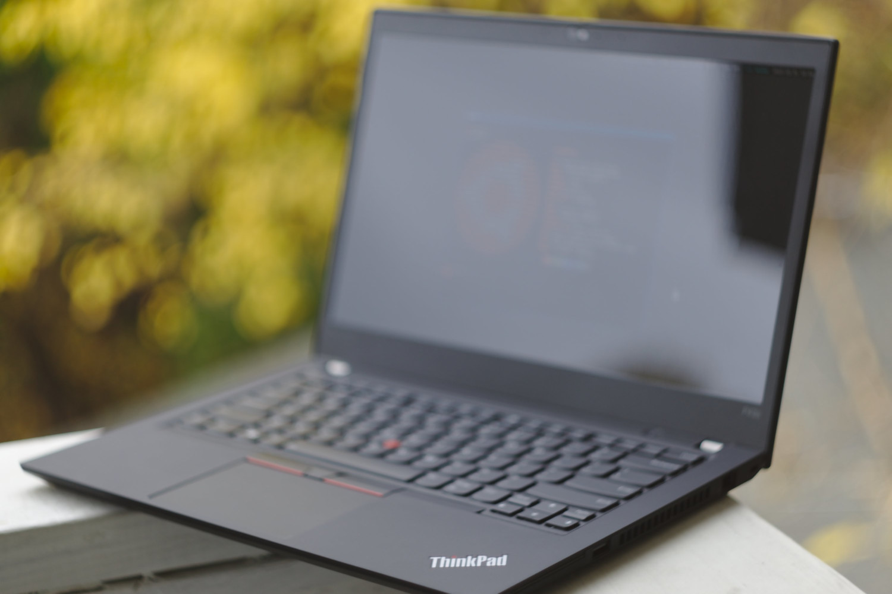

The ThinkPad P43s is a 14-inch mobile workstation released in mid 2019. The model I bought (P43s, type 20RH) came with a quad-core Intel Core i7 8565U 1.8 GHz CPU (up to 4.6 GHz with Turbo Boost) with integrated Intel 620 UHD graphics, an NVIDIA Quadro P520 GPU, a WQHD (2560x1440) glossy screen, a 128 GB NVMe SSD, and 8 GB of on-board RAM. In the interest of future proofing the specs, I later upgraded the RAM to 24 GB (by adding a 16 GB SO-DIMM) and the storage to 1 TB. After discounts and cashbacks, upgrade to a 3-year warranty, the final cost of the fully-configured system was about $1470.1
As can been seen from the common hardware maintenance manual and the platform specifications, the P43s is almost identical to the business-oriented ThinkPad T490 released a few months prior to the P43s, except for branding and the usage of a Quadro P520 GPU instead of a GeForce MX250 GPU (both use the same Pascal-based GP108 chip however).
I first bought a dual-sided M.2 2280 NVMe SSD for the laptop, only to realize that its expansion slot only accepts single-sided M.2 2280 NVMe SSDs. (A dual-sided SSD does fit in the expansion slot; however it’s very snug and tends to bend the SSD slightly, and since that can lead to read-write errors later on, I decided not to risk it.) I really wish Lenovo made things like this clear in the platform specifications. The “MIL-STD-810G military-standard” base cover assembly also managed to develop a (barely noticeable) hairline crack near one of the USB/SS ports the second time I opened it to install a single-sided SSD. I consider myself a very careful user and I’ve opened countless laptops multiple times and this is the first time something like this has happened to me. I haven’t had issues like this even with cheap laptops.
Among other issues, the spacebar on the keyboard started making an annoying squeak (especially when pressing the corners) a few days after I received the laptop. I called Lenovo technical support and they sent me a new keyboard. However, I had to buy a “proprietary” tool (part number: 01LX856) for $15 from eBay to replace the keyboard. (I know that there are ways to remove the keyboard without using the tool, but I was too afraid after the base cover mishap.)
Less serious issues include the presence of a very small amount of coil whine that seems to originate near the middle of the keyboard. It gets more prominent when data is being written. However, it’s only noticeable when operating in a silent room and on bringing the laptop very close to the ears.
The rest of these notes document the issues I faced (and the steps I took) when installing Debian 10.5 (Bullseye) on the P43s. Before Debian, I used Ubuntu 18.04 LTS for about a year (from August 2019 to August 2020), as the required NVIDIA drivers weren’t available on Debian when I first bought the laptop.
When installing Debian, it’s important to note that the P43s requires
the nonfree iwlwifi kernel driver for its WiFi adapter.
Rather than use the usual Debian netinst ISO, it’s therefore better to
use the (unofficial) netinst
ISO that includes nonfree firmware. Otherwise, the installer will
prompt you to supply the driver files during installation, or use a
different network interface to download the packages.
Assuming that the install went fine, log in to the system. The
default console font is too tiny on a HiDPI screen. To change the
console font run su -l -c 'dpkg-reconfigure console-setup'
and choose a larger font, e.g., Terminus 16x32.
To set up the network, first bring up the wireless interface by
running (as root with su -l):
ip a
iw dev
ip link set wlp0s20f3 upwhere wlp0s20f3 is the wireless device name (change as
required). Then edit /etc/network/interfaces (assuming a
WPA/WPA2 connection) and add the following lines.
allow-hotplug wlp0s20f3
iface wlp0s20f3 inet dhcp
wpa-ssid <network-name>
wpa-psk <password>And finally, bring up the connection:
ifup wlp0s20f3
iw wlp0s20f3 link
ip aI plan to use NetworkManager as my network management daemon later
on, so setting up the network using ip is only to install
basic applications.
Install a bare minimum of applications to get started:
su -l -c '
apt install build-essential \
curl \
dbus-x11 \
firefox-esr \
i3 \
network-manager-gnome \
pavucontrol \
pulseaudio \
rsync \
rxvt-unicode-256color \
spacefm \
sudo \
tmux \
vim-gtk3 \
xorg
'and add the default user to the sudo group:
su -l -c "usermod -a -G sudo $USER"As the last step of the basic installation, install drivers for
the GPU. NVIDIA Quadro P520 requires the proprietary NVIDIA drivers,
which are available from Bullseye backports. So add them2 to
/etc/apt/sources.list:
# Bullseye backports
deb http://deb.debian.org/debian bullseye-backports main contrib non-freeAfter adding bullseye-backports, install the
nvidia-driver package, and optionally, bbswitch (for
powering down the GPU when not neeeded).
apt update
apt install linux-headers-amd64 mesa-utils
apt install -t bullseye-backports nvidia-driver nvidia-smi bbswitch-dkmsThe above steps should leave you with a minimal working desktop. The basic installation is far from optimal and I had to do several tweaks (see below) to be make it fully functional.
Since the P43s has a WQHD (2560x1440) screen, the display requires a
fractional scaling factor of around 1.75 for the GUI elements and fonts
to match those of a typical 14” laptop with 1366x768 screen resolution.
Since I don’t use a desktop environment, I set the screen resolution in
~/.Xresources by adding3
Xft*dpi: 168
Xcursor.size: 42Standard cursor themes (e.g., Adwaita and DMZ) don’t come with a size 42 cursor, which means that the X would pick the next available cursor size, which is 48. I was a bit annoyed by this, so I ended up creating a new set of Adwaita cursors in intermediate sizes, which also provides some missing Qt 5 cursors.
Also, Qt and GTK applications need to be told about the change in
screen resolution, which requires setting the following environment
variables (e.g., in ~/.xinitrc)
# Scale GTK3 UI elements by a factor of two. But this
# scales the text, which has been scaled once before.
export GDK_SCALE=2
# Thus, undo scaling of text.
export GDK_DPI_SCALE=0.5
# HiDPI Qt settings.
export QT_FONT_DPI=168
export QT_AUTO_SCREEN_SCALE_FACTOR=1Applications using GTK 2.0 still need to be explicitly told to use
larger GUI elements, which requires adding the following4 to
~/.gtkrc-2.0:
gtk-icon-sizes = "gtk-large-toolbar=48,48:gtk-small-toolbar=32,32:gtk-menu=32,32:gtk-dialog=48,48:gtk-button=32,32:gtk-dnd=32,32:panel-menu=48,48"
# Increase scroll bar width.
style "scroll" {
GtkScrollbar::slider-width = 24
}
class "*" style "scroll"Even though the P43s’s fan has a maximum speed of ~ 5000 rpm, by default, it doesn’t spin faster than ~ 4000 rpm, even at full CPU and/or GPU loads. This is somewhat puzzling considering how much the processor is throttled by default (see the next section). In any case, on Linux, one can use Thinkfan to control the fan speed of ThinkPads.
Begin by enabling the fan_control option of the
thinkpad-acpi kernel module by creating an appropriate configuration
file in the modprobe configuration directory, e.g.,
apt install thinkfan lm-sensors
echo "options thinkpad_acpi fan_control = 1" >/etc/modprobe.d/p43s.conf
# Reload thinkpad_acpi and enable fan_control without a restart.
modprobe thinkpad_acpi fan_control=1To configure Thinkfan, one needs to specify the sensors (thermal zone devices) for temperature readings. On my P43s, I found eight different sensors, e.g.,
$ ls -1 /sys/devices/virtual/thermal/thermal_zone*/temp
/sys/devices/virtual/thermal/thermal_zone0/temp
/sys/devices/virtual/thermal/thermal_zone1/temp
/sys/devices/virtual/thermal/thermal_zone2/temp
/sys/devices/virtual/thermal/thermal_zone3/temp
/sys/devices/virtual/thermal/thermal_zone4/temp
/sys/devices/virtual/thermal/thermal_zone5/temp
/sys/devices/virtual/thermal/thermal_zone6/temp
/sys/devices/virtual/thermal/thermal_zone7/tempOf these devices, thermal_zone7 is the WiFi adapter:
$ cat /sys/devices/virtual/thermal/thermal_zone7/type
iwlwifi_1But since the WiFi module becomes active only after Thinkfan starts,
Thinkfan fails to read the temperature and aborts. Thus, only use
sensors whose temperatures can be read by the time Thinkfan starts. Once
the sensors have been decided, edit the configuration file at
/etc/thinkfan.conf and add them, e.g.,
# Thinkfan configuration
# /etc/thinkfan.conf
tp_fan /proc/acpi/ibm/fan
# Thermal zone devices
hwmon /sys/devices/virtual/thermal/thermal_zone0/temp
hwmon /sys/devices/virtual/thermal/thermal_zone1/temp
hwmon /sys/devices/virtual/thermal/thermal_zone2/temp
hwmon /sys/devices/virtual/thermal/thermal_zone3/temp
hwmon /sys/devices/virtual/thermal/thermal_zone4/temp
hwmon /sys/devices/virtual/thermal/thermal_zone5/temp
hwmon /sys/devices/virtual/thermal/thermal_zone6/temp
# Syntax: (<level>, <low>, <high)
#
# <level> is the fan level to use (0-7 with thinkpad_acpi)
# <low> is the temperature at which to step down to the previous level
# <high> is the temperature at which to step up to the next level
# All numbers are integers.
(0, 0, 54)
(1, 54, 60)
(2, 52, 62)
(3, 54, 64)
(4, 56, 66)
(5, 58, 68)
(6, 60, 70)
(7, 62, 32767)The above configuration ensures that the fan hits peak speed (fan level 7) when one of the sensors registers a temperature greater than 70 °C and steps down to fan level 6 when the temperature drops down to 62 °C. Finally, (re)start Thinkfan:
systemctl start thinkfan.serviceNote.— Debian 10 has an older version of Thinkfan in its repositories, which is what I’m using here. Newer versions are more featureful and use a YAML configuration file.
As others have noted, the P43s throttles its processor quite aggressively, which almost makes me question Lenovo’s decision to market it as a mobile workstation. Lenovo acknowledged this issue in 2019, but blamed it on Intel’s proprietary framework (called DPTF) to regulate the CPU performance depending on the device orientation and the surface on which it’s placed, among other things. Despite multiple firmware updates, the issue—as far as I know—has still not been resolved.
For stress testing, I used stress,
which calculates the square root of random numbers in multiple loops. On
stress testing with stress --cpu 1, the single-core speed
throttles between 3.0–3.4 GHz with the package power between 10.0–11.0 W
and the temperature around 65 °C. The fan spins at about 4000 rpm at
this temperature. Updating to BIOS version 1.68 didn’t show any
noticeable improvement in the single-core clock speed.
Similar to the single-core case, the multi-core (stressing with
stress --cpu 8) clockspeed drops down from the initial
4.0–4.1 GHz to about 2.0 GHz after a couple of seconds and the package
power remains at 11.9–12.0 W, with the fan spinning at about 4000 rpm.
Updating to BIOS version 1.68 improved the speed somewhat and it peaks
around 2.4 GHz after the update.
To partially fix CPU throttling, I installed throttled,
which sets the CPU package power limit and temperature trip point to a
higher value, essentially overriding the values set by the embedded
controller:
# Disable the thermald and don't attempt to control the
# temperature automatically.
sudo systemctl disable --now thermald.service
sudo systemctl mask thermald.service
sudo apt install git build-essential python3-dev libdbus-glib-1-dev libgirepository1.0-dev libcairo2-dev python3-venv python3-wheel
git clone https://github.com/erpalma/throttled.git
sudo ./throttled/install.shAfter installing throttled, the multi-core clock speed
improved to about 3.0 GHz. I also used the following voltage offsets to
undervolt the CPU (in /etc/lenovo_fix.conf):
[UNDERVOLT]
# CPU core voltage offset (mV)
CORE: -100
# Integrated GPU voltage offset (mV)
GPU: -80
# CPU cache voltage offset (mV)
CACHE: -100
# System Agent voltage offset (mV)
UNCORE: -80
# Analog I/O voltage offset (mV)
ANALOGIO: 0After undervolting, the single-core speed stays close to 4.2 GHz and
the multi-core speed stays between 3.2–3.3 GHz, which is a lot better
than the earlier 2.0 GHz that I was getting. The package power after
undervolting is around 25.0 W, which is also the TDP-up limit for the Core i7
8565U. Using throttled also results in a 50%
improvement in the Geekbench
5 multi-core score (from about 3000 to 4500).
I saw a minor performance boost in my tests when I turned off the Spectre and Meltdown mitigations.
However, it’s not considerable and, depending on your use-case, may not
be worth the security risk. Debian 10 uses Linux 4.19.y, which doesn’t
have the all-in-one mitigations=off option that the newer
kernels have. Hence, to turn off the mitigations, one has to pass the
following kernel parameters (by editing /etc/default/grub,
say):
nopti nospectre_v2 spectre_v2_user=off spec_store_bypass_disable=off l1tf=off mds=offFor more information, see the documentation on kernel parameters.
Note.— I should mention that all clock-speed measurements were taken with the CPU P-state set to “performance” using TLP, mitigations turned off, manual fan control, and the GPU powered down (see below).
NVIDIA is notorious for making lousy proprietary drivers for the Linux desktop, although things have improved in recent years. A major issue with the NVIDIA drivers have been the lack of good support for PRIME render offloading, which enables one to run X on Intel graphics, but run more GPU-demanding applications on the NVIDIA GPU, within the same X session.
Debian 11 and newer supports PRIME render offloading when the proprietary drivers are installed. However, on Debian 10, one is stuck with a semioptimal solution like Bumblebee for on-demand powering up/down of the GPU. Of course, one can always exclusively use Intel graphics or the NVIDIA GPU without worrying about PRIME render offloading. Although not very efficient, the overall GPU utilization is much better than when using Bumblebee, so this is what I chose to do.
Before moving to Debian, on Ubuntu, I was using
prime-select to switch between NVIDIA and Intel graphics.
But prime-select is a Canonical-developed tool and isn’t
available on Debian. However, the bbswitch kernel module
developed as part of the Bumblee Project can also be used to turn off
the GPU, somewhat mimicking the functionality of
prime-select. With bbswitch installed and
loaded, one can turn the GPU on/off by running:
echo "ON" >/proc/acpi/bbswitch # turn GPU on
echo "OFF" >/proc/acpi/bbswitch # turn GPU offIf one plans to run X on the GPU, this also requires an appropriate X
configuration file in /etc/X11/xorg.conf.d. Much of this
can be easily automated, and I wrote a small script called gpu-select
that does exactly this. (Getting all this to work took more time than
I’d like to admit and things are still not perfect.) As I remarked
before, this is far from an ideal solution, e.g., when the GPU is
selected, it’s always powered on, which leads to poor thermals. Once
Debian 11 becomes the new stable release, I don’t plan to use
gpu-select if PRIME render offloading works as claimed.
Screen tearing is a common issue with integrated Intel graphics. For Intel graphics, the Debian Wiki recommends against installing the older xf86-video-intel driver, and recommends using X’s modesetting driver (installed by default) instead. However, as far I know, it’s not possible to fix screen tearing with the modesetting driver, unless one also uses a compositor. Since I don’t want the overhead of a compositor and also because I don’t care for its other aspects, I installed the old driver:
apt install xserver-xorg-video-intelWith the xf86-video-intel driver, screen tearing can be fixed by
adding an X configuration file, e.g.,
/etc/X11/xorg.conf.d/intel.conf, with the following
contents:
Section "Device"
Identifier "Intel Graphics"
Driver "intel"
Option "TearFree" "true"
Option "AccelMethod" "sna"
EndSectionI also personally found the xf86-video-intel driver to be more “snappier” than the modesetting driver when connecting to external displays and projectors.
I’m not entirely satisfied with this purchase and I believe Lenovo could have crafted a much better machine, with better Linux support. I also somewhat regret purchasing a machine with an NVIDIA GPU, since I rarely use it and almost always keep it turned off using gpu-select. Despite all this, my P43s will continue to be my main laptop for the next couple of years.

This was in August 2019. Price breakdown: $1213 for the laptop + 3-year warranty, $182 for a 1 TB Samsung 970 EVO SSD, and $75 for a Corsair Vengeance 16 GB 2400 MHz DDR4 SO-DIMM.↩︎
Note that this might break the standard installation of
some i386 packages, e.g., wine32, which depends on an older
version of libvulkan1:i386 that’s incompatible with its
more recent amd64 version installed along with the
nvidia-driver package. The workaround is to first install
the required i386 packages from backports before installing such
packages.↩︎
In reality, the setup I use is more involved than this.
I sometimes connect my P43s to an external 1920x1080 monitor and keep
the laptop’s display turned off. Because of this, I have two sets of
configuration files and custom code in my ~/.xinitrc
that picks a low-DPI environment when requested.↩︎
This doesn’t seem to work if the
gtk-icon-sizes property has been set in the configuration
file of the chosen GTK theme. For instance, I had to comment out the
lines that set gtk-icon-sizes in the configuration files of
Ubuntu’s Ambiance and Radiance themes for this to work.↩︎
Last updated: 2020-08-20 11:00 EDT